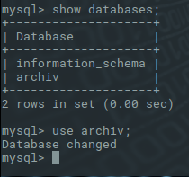

SQL ist die meist verbreitete Sprache, die heutzutage für Datenbanken verwendet wird. In dieser Lerndokumentation
befindet sich all das, was man wissen sollte.
Die Lerndukumentation basiert auf der Linux Distribution Linux 105 4.4.0-142-generic #168-Ubuntu
Als erstes muss man den MySQL Dienst starten. Damit benutzt man den Befehtl über das Init-Skript. Nägmlich: '/etc/init.d/mysql'.
Nachdem man den Befehl eingegeben hat, kommt eine Bestätigung, dass der MySQL-Server gestartet werden konnte.
Von nun an läuft der Dienst selber. Das bedeutet, dass wenn man das Terminal schliesst, läuft der MySQL Dienst
im Hintergrund weiter. Das ist zum Beispiel vergleichbar mit einer Antivierensoftware. Wenn man das Fenster schliesst,
läuft die Anwendung trotzdem weiter.
Nun muss man noch die Konsole starten, damit man mit MySQL programmieren kann. für dies gibt man ein 'mysql -u
root -p'. Hierbei steht '-u' für 'user' und '-p' dafür, damit das Passwort abgefragt werden soll. Danach folgt
logischerweise eine Passworteingabe.
Man kann das Passwort für den MySQL Dienst auch beliebig ändern. Für dies, ist folgender Befehl notwendig: 'set
password for root@localhost=Password('DeinPasswort');
Eine neue Datenbank erstellt man ganz einfach mit: 'create database archiv;'. Nun hat man eine neue Datenbank
erstellt und sie, wie man sieht, nach 'archiv' benannt. Nun kann man diese Datenbank (die jetzt natürlich leer
ist) anzeigen lassen mit: 'show databases;'. Nun wird eine Liste angezeigt mit allen Datenbanken, die auf diesem
Computer bei MySQL registriert sind. In diesem Fall nur eine, nähmlich 'archiv'.
Damit man mit dieser Datenbank arbeiten kann, muss man sie zuerst anwählen. Mit 'use archiv;' wird diese ganz
einfach ausgewählt. 'Database change' wird angezeigt.
